AE-TPF Technical Interview
End-to-end airline review analytics: scrape → S3 → Snowflake → dbt star schema → Mode dashboard. One north-star metric, five evaluation areas, Show → Why → What-if.
Mark Pham · Analytics Engineering ownership across EL + Transform + DataOps
Spirit Airlines average review rating (2015–2025). Coupled with 87.86% not recommending.
Agenda · ≤ 1.5h
Format for every area: Show → Why → What-if. ~5 min per sub-topic.
Project scope
Skytrax feedback is messy HTML — not warehouse-ready or decision-ready. We turn it into a repeatable ELT + star schema so analysts can track satisfaction.
Logic in dbt (average_rating, rating_band, recommended) → Mode on FCT_REVIEW_ENRICHED.
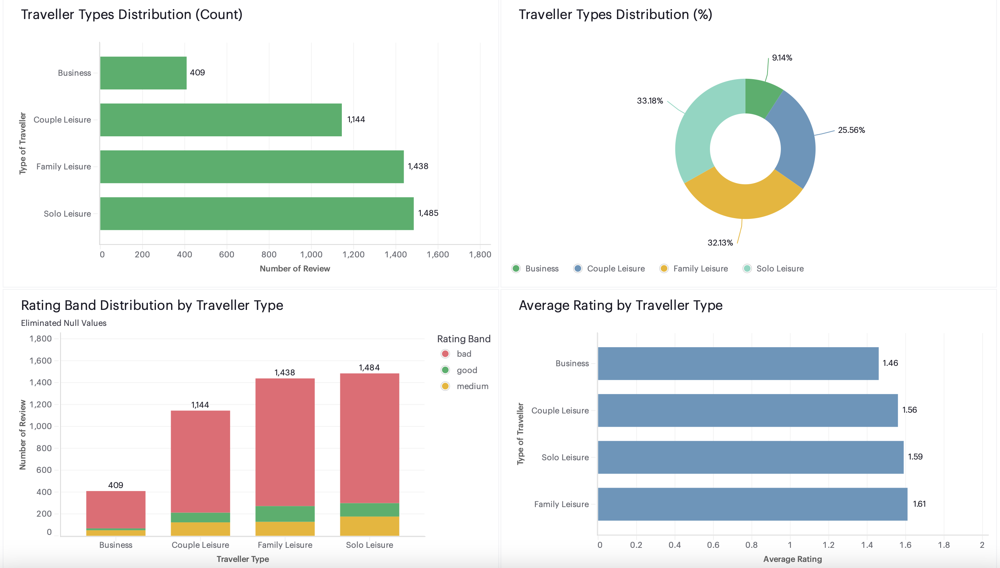
System map
Scrape AirlineQuality.com (4 types × entity parallelism). Land date-partitioned CSVs.
Clean → S3 processed/ → quality gates → COPY INTO Snowflake RAW + LOAD_AUDIT.
Medallion layers → Kimball star: staging → intermediate → marts (dims + incremental fact).
Airflow Datasets + cosmos DbtDag; slim CI + defer/favor-state CD; Terraform IaC.
Mode dashboard on Spirit satisfaction — KPIs, segments, airports — from warehouse marts.
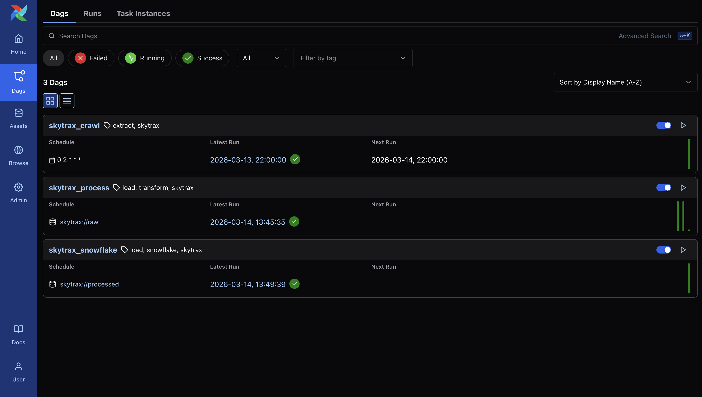
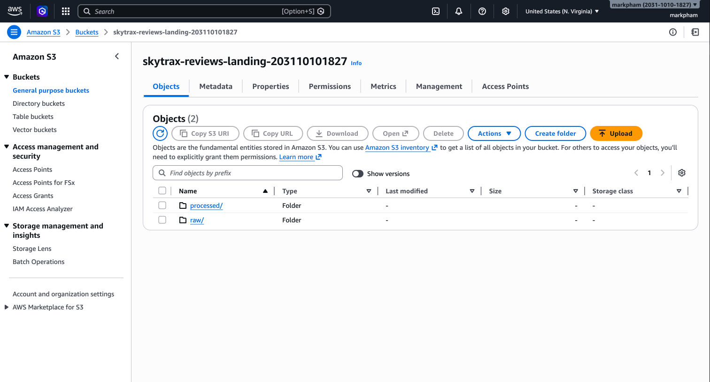
End-to-end · data plane
provisions infra · ships dbt · no long-lived AWS keys
End-to-end · control plane detail
Nothing important is click-ops.
GitHub Actions never stores static AWS keys.
Ship only what changed.
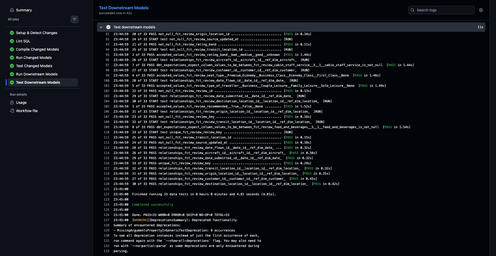
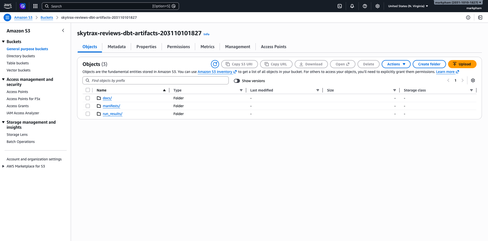
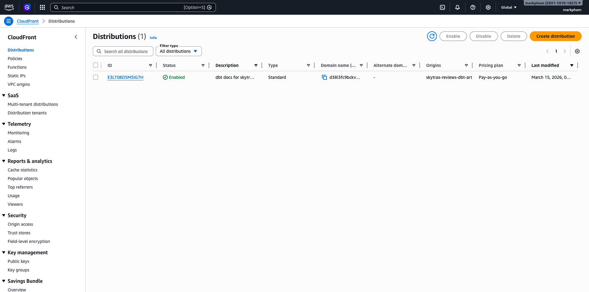
Required stack + extras
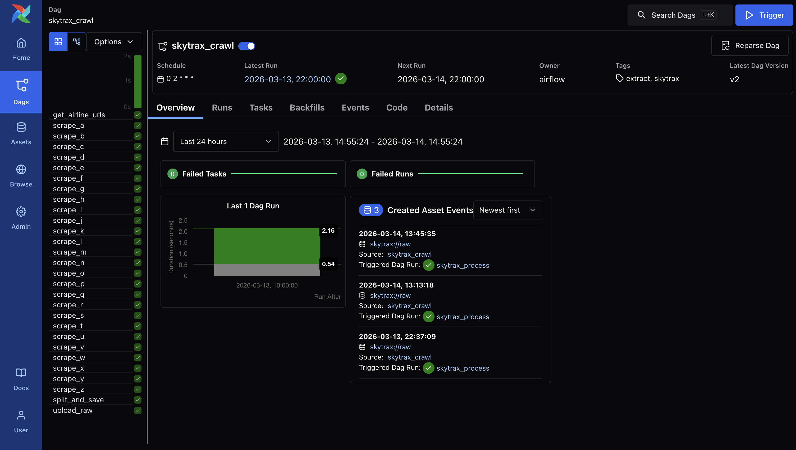
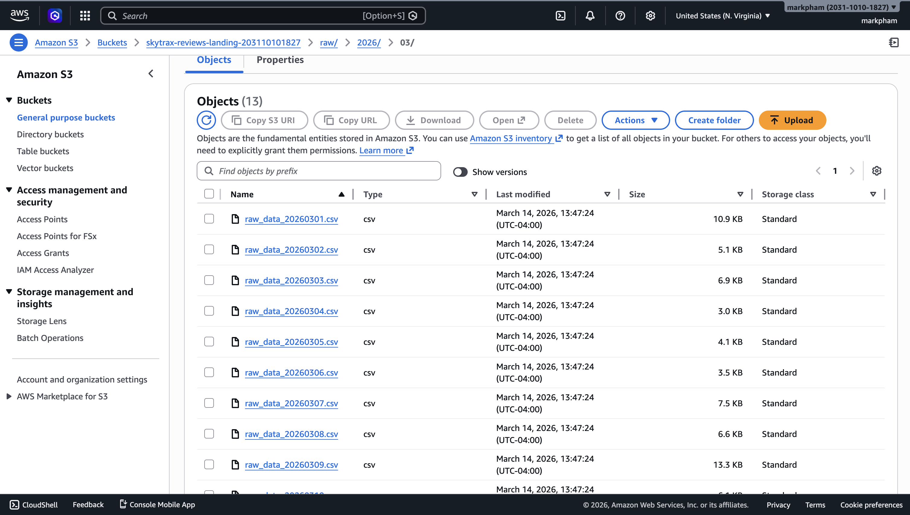
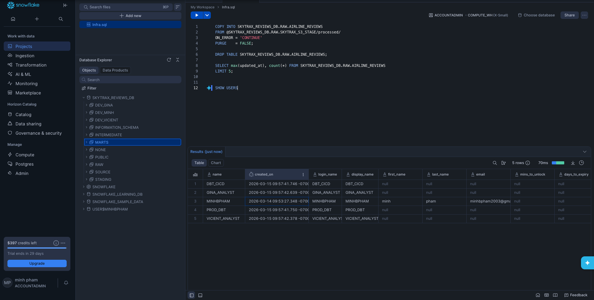
| Layer | Choice | Why (trade-off) |
|---|---|---|
| Warehouse | Snowflake | Cloud DWH required by TPF. COPY INTO, RBAC, tag-based masking, separate compute. |
| Transform | dbt Core | Tests, docs, contracts, incremental, defer/state — portable vs Cloud lock-in for this project. |
| BI | Mode Analytics | Warehouse-direct (TPF). SQL-first to defend joins/aggs; Spirit dashboard from analyst partner. |
| Orchestration | Airflow + Datasets + cosmos | Event-driven crawl→process→load; cosmos makes dbt graph first-class tasks. |
| Landing | AWS S3 | Replayable raw archive; decouple scrape from load; cheaper than warehouse history. |
| IaC | Terraform (AWS + Snowflake roots) | Every bucket, role, schema, warehouse, mask, CloudFront, OIDC provider — reproducible, reviewable, no click-ops drift. |
| CI/CD + Auth | GitHub Actions + OIDC | Slim CI / defer-favor-state CD; GHA assumes AWS IAM via OIDC — no static cloud keys for artifacts. |
Area 1 · Data Modeling & Architecture
One row per review submission in fct_review.
Deterministic surrogates; role-playing date + location.
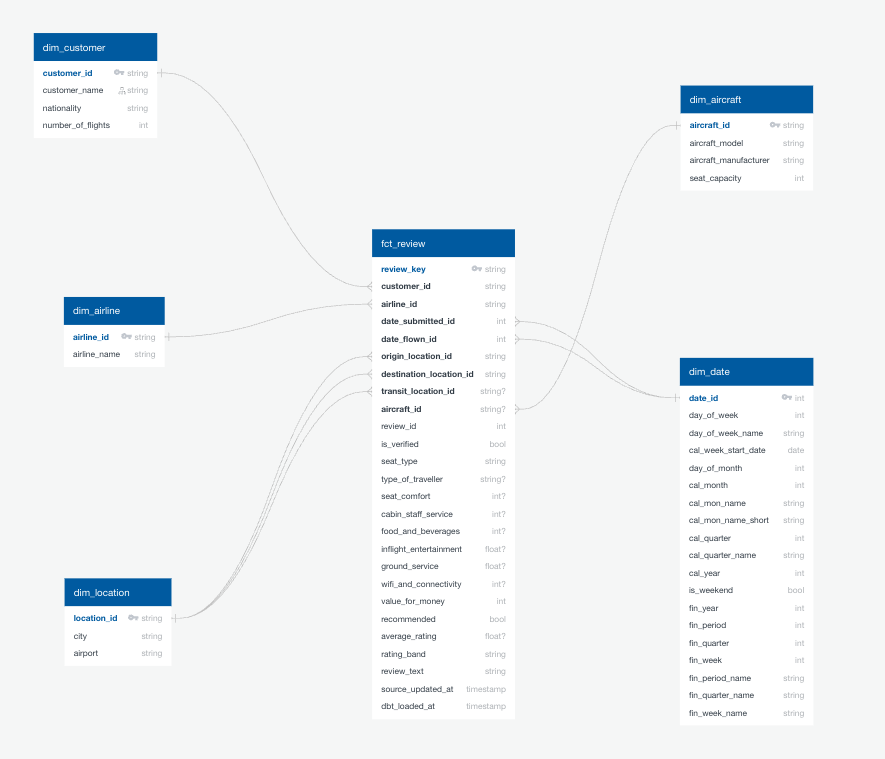
Area 1 · Show → Why → What-if
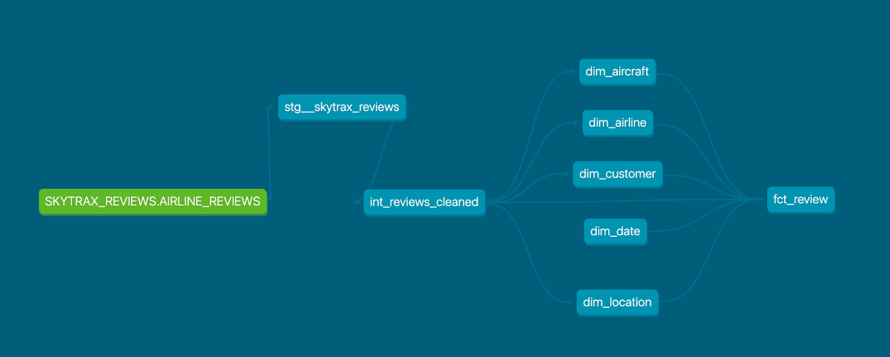
Area 2 · Data Transformation
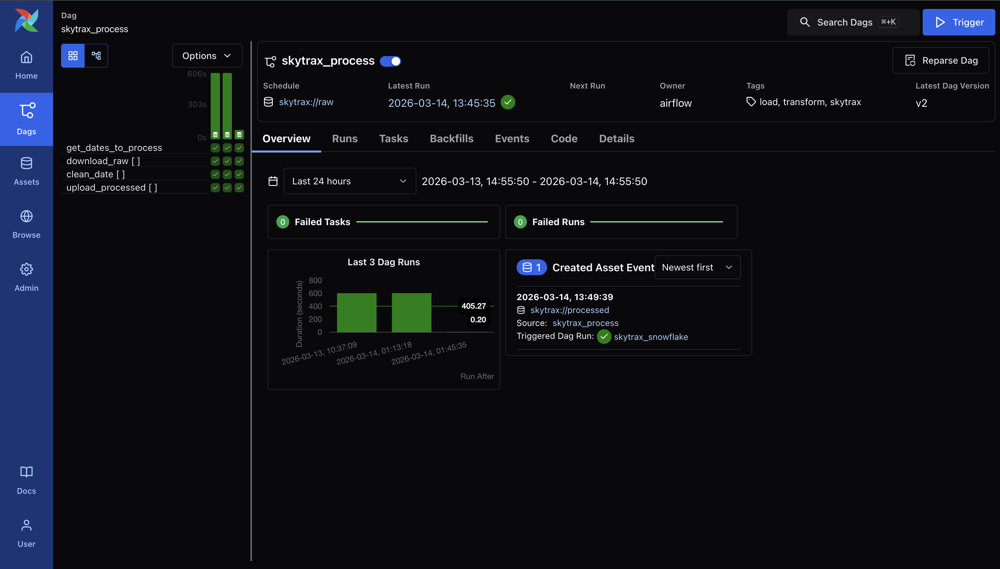
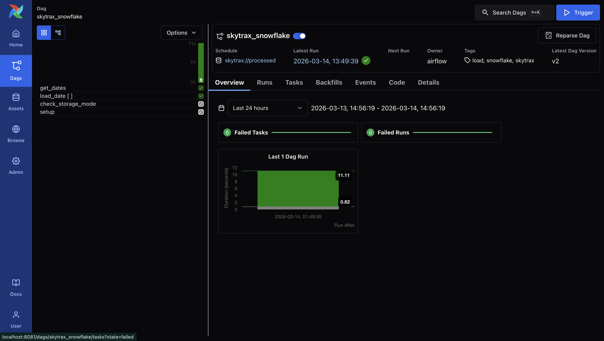
Area 2 · Show → Why → What-if
Area 3 · Data Governance
Area 3 · Show → Why → What-if
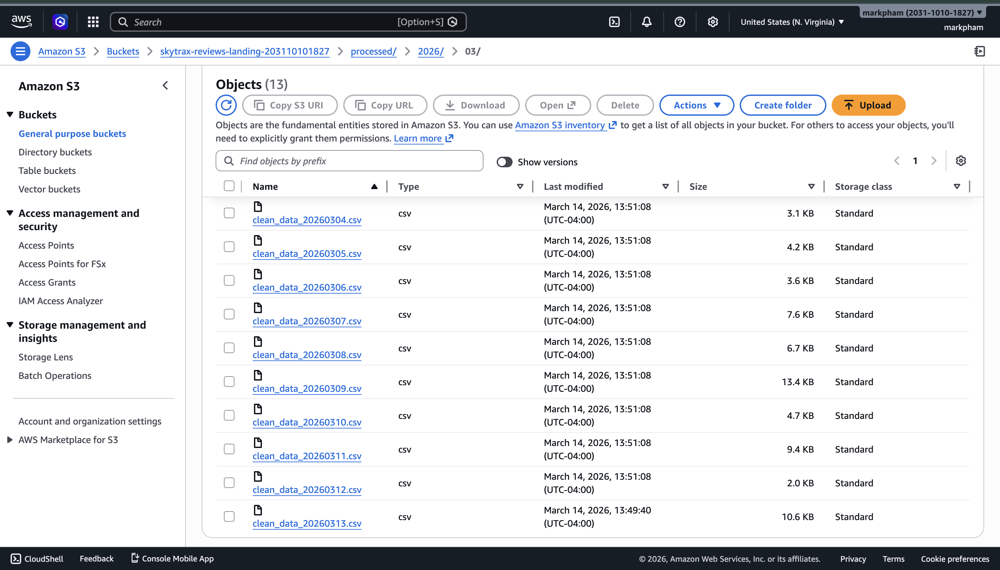
Area 4 · Data Insight
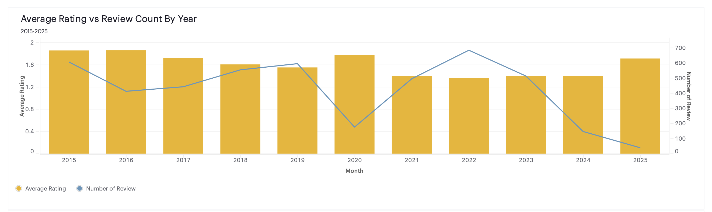
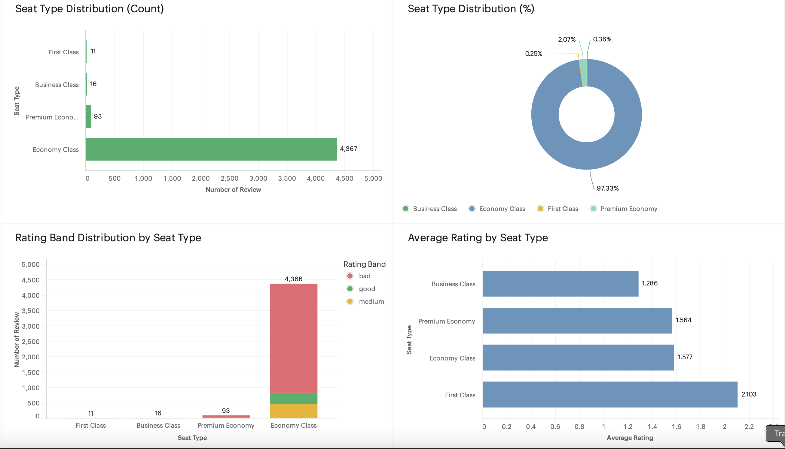
Area 4 · Show → Why → What-if
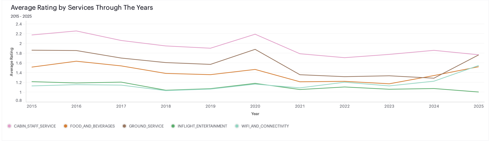
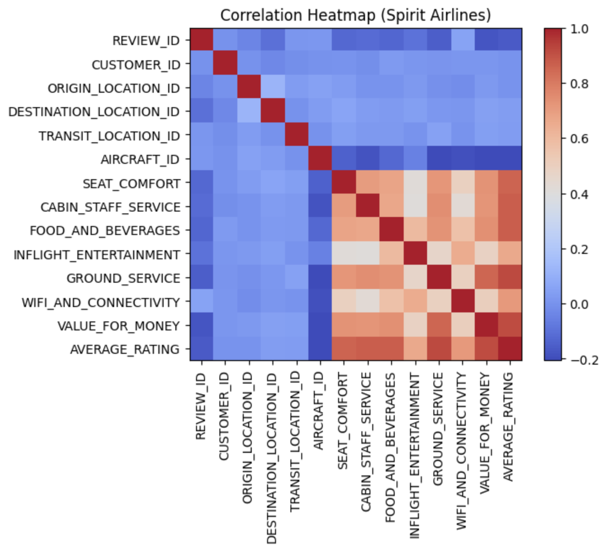
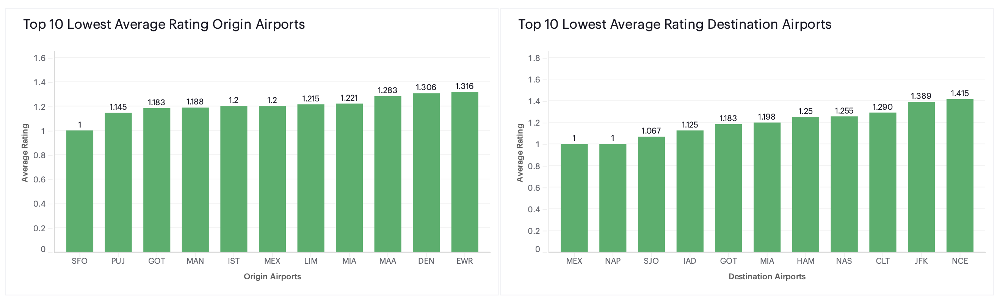
Area 5 · DataOps
Area 5 · Show → Why → What-if
Narrative tip
skytrax_reviews_extract_load
skytrax_reviews_transformation
spirit_airlines_dashboard (Mia Tran)
Be explicit: TPF accepts team work, but ownership depth scores higher on EL + Transform + DataOps — lean there; use Insight for business storytelling.
Practical checklist
Prep bank
Remember: AI tools are banned in the live interview. This deck is prep only.
Close
Skytrax is a full AE story: dimensional medallion model, incremental dbt, governed PII, a Mode metric that hurts (1.59), and DataOps that only rebuilds what changed.
Questions welcome — pick an area and we’ll go deeper.
EL repo → land & load
Transform repo → dims/facts + CI/CD
Dashboard repo → business metric
Every answer: Show ·
Why ·
What-if